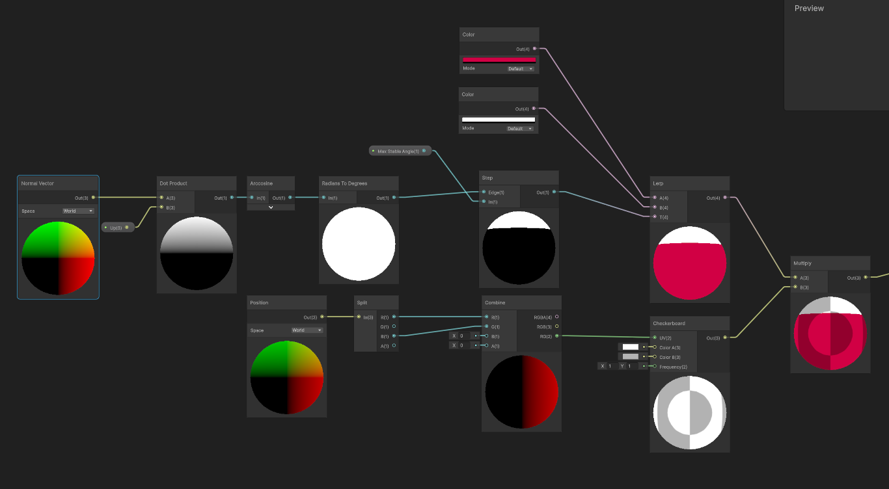

!!! THIS IS NOT DONE YET !!!
Player
So for the Movement in unity or MIU im going to go script by script function by function and you can see which script im talking about by the tittle that comes up.
like here it is "Player.cs"
like here it is "Player.cs"
Player.cs
Veriables
Everything under miscellaneous doesnt really matter that much they just reference the other scripts that make up the player character.
I am usuing the Input Actions or IA that unity has for this project. They are very simular to unreals input actions.
Start just Initializes a bunch of these codes or makes new once so im gonna skip it.
Update how ever does do a few things so lets look at that.
First we store the players input this frame and the delta time.
Then we use the input make a new CameraInput with its look vector being equal to the input.look value.
After that we call a custom function in the camera to update its rotation using the cameraInput.
Here we make a new characterInput struct and fill in with information based of if an input.veriable was pressed this frame or not.
Their are some expections to this, like rotation is just grabed from the camera or JumpSustain is just shaking if was pressed or not.
The one line I want to look closer at is the Run/Crouch inputs, see they are both togglable so they need some extra lines.
This statement is just trying to get what value the crouch should be. We use the "?" operator multiple times to get the answer we want.
the "?" operatror is an if statement for a variable basicly; (statement) ? true : false; if statement is true return the left most value other wise return the right most.
The first ? operator checks if we have crouch toggled or not. The secound ? operator just turns the crouch on or off.
We call the player character to update its inputs and then its body, a function we will see later.
After that we do the weapon inputs but also have a debug key that allows us to Teleport to where a ray hits in the scene.
This is very usefull becouse of how our terrain looks in the game.
LateUpdate is what comes next.
in here we just call a bunch of function inside other scripts that make up the player. Here is where we update the camera, we do this here so that we know that all the movement callculation have been done this frame and now can just move the camera smoothly.
[Header("Miscellaneous")]
[SerializeField] private PlayerCharacter playerCharacter;
[SerializeField] private cutAndParry cutAndParry;
[SerializeField] private PlayerCamera playerCamera;
[SerializeField] private CameraSpring cameraSpring;
[SerializeField] private cameraLean cameraLean;
[Header("Input")]
[SerializeField] private bool toggleCrouchSlide = false;
[SerializeField] private bool toggleRun = false;
private IA_AdvancedPlayer _inputActions;
I am usuing the Input Actions or IA that unity has for this project. They are very simular to unreals input actions.
Start just Initializes a bunch of these codes or makes new once so im gonna skip it.
Update how ever does do a few things so lets look at that.
void Update()
{
var input = _inputActions.player;
var deltaTime = Time.deltaTime;
// get camera input and updates its rotation
var cameraInput = new CameraInput { lookVec = input.look.ReadValue() };
playerCamera.UpdateRotation(cameraInput);
Then we use the input make a new CameraInput with its look vector being equal to the input.look value.
After that we call a custom function in the camera to update its rotation using the cameraInput.
// get character input and update it
var characterInput = new CharacterInput
{
// movement input
Rotation = playerCamera.transform.rotation,
Move = input.WASD.ReadValue(),
Jump = input.jump.WasPressedThisFrame(),
JumpSustain = input.jump.IsPressed(),
Crouch = toggleCrouchSlide ? (input.crouch_slide.WasPressedThisFrame() ? CrouchInput.toggle : CrouchInput.None) : (input.crouch_slide.IsPressed() ? CrouchInput.Crouch : CrouchInput.Uncrouch),
Run = toggleRun ? (input.run.WasPressedThisFrame() ? RunInput.toggle : RunInput.None) : (input.run.IsPressed() ? RunInput.Run : RunInput.Unrun),
Dash = input.dash.WasPressedThisFrame(),
};
var weaponInput = new weaponInput
{
// Gameplay input
Cut = input.cut.WasPressedThisFrame(),
Parry = input.parry.WasPerformedThisFrame(),
Sheath = input.Sheath.WasPerformedThisFrame()
};
Their are some expections to this, like rotation is just grabed from the camera or JumpSustain is just shaking if was pressed or not.
The one line I want to look closer at is the Run/Crouch inputs, see they are both togglable so they need some extra lines.
Crouch = toggleCrouchSlide ? (input.crouch_slide.WasPressedThisFrame() ? CrouchInput.toggle : CrouchInput.None) : (input.crouch_slide.IsPressed() ? CrouchInput.Crouch : CrouchInput.Uncrouch),
the "?" operatror is an if statement for a variable basicly; (statement) ? true : false; if statement is true return the left most value other wise return the right most.
The first ? operator checks if we have crouch toggled or not. The secound ? operator just turns the crouch on or off.
playerCharacter.UpdateInput(characterInput);
playerCharacter.UpdateBody(deltaTime);
cutAndParry.UpdateWeaponInput(weaponInput);
#if UNITY_EDITOR
if (Keyboard.current.tKey.wasPressedThisFrame)
{
var ray = new Ray(playerCamera.transform.position, playerCamera.transform.forward);
if (Physics.Raycast(ray, out var hit))
{
Teleport(hit.point);
}
}
#endif
}
After that we do the weapon inputs but also have a debug key that allows us to Teleport to where a ray hits in the scene.
This is very usefull becouse of how our terrain looks in the game.
LateUpdate is what comes next.
void LateUpdate()
{
var deltaTime = Time.deltaTime;
var cameraTarget = playerCharacter.getCameraTarget();
var state = playerCharacter.GetState();
playerCamera.UpdatePosition(cameraTarget);
cameraSpring.UpdateSpring(deltaTime, cameraTarget.up);
cameraLean.UpdateSpring(deltaTime, state.Stance is Stance.sliding, state.Acceleration, cameraTarget.up);
}
PlayerCharacter.cs
The actual meat of the character movement happens in this script. Think of player.cs as a manger calling all the other scripts as needed.
Let's being with UpdateInput, now this function updates a bunch of veriabels so I wont show all of it but I wanna show a part of it that I really find cool
This looks odd but this is a simple swtich statement but when I was making this I had no idea you could use a switch like this.
Depending on what CrouchInput is it will return true or false but this also allows us to make toggle crouch by just fliping the _requestedCrouch.
the _ => _requestedCrouch looks really werid but is just the defualt case.
UpdateBody from earlier show up here again and it looks like this
This updates the player hight and its camera postion but over time using a lerp.
This create a smooth up and down while crouching.
Now lets look at the BeforeCharacterUpdates function, this on is called before we update the players movement. So this happens before we apply anything like position and rotation.
This is just setting up some states that can be called from heldown buttons, so both runing and crouching comes into play here.
AfterCharacterUpdate does basicly the same so im not going to show it.
So now for the big part * UpdateVelocity *
First we do some set up, we clear Acceleration and set it to 0, we get the grounded movements direaction by calling the function GetDirectionTangentToSurface.
This function Crosses the direction with the characters up and then takes the resulting vector and crosses that with surfaceNormal. Returning this vecotr normalized for us to use.
Here we save a bunch of veriabels for later. Almost all of these have something to do with the _state or _lastState veriables which just a saved copy of the enum that saves the players stance, ie crouching, running, wallruning.
Here we have the start to Slide . First we just do a check to see if we can slide or not.
If we can slide then we set the stance to slide.
Then we check if we are in were in the air. If we were then we get the ground normal by using the KinematicCharacterMotor.
We project our current velocity onto this groundNormal. We do this to get a perallel vector to the plane we sliding on.
if the tangent is great enough we set the currentVelocity to be equal to tangent.normalized * currentVelocity.magnitude. This directs our movementom along the normal of the serfuce we are standing on.
After that we make a float called effectiveSlideStartSpeed. This float will effect the currentVelocity later but we make this temperary verstion so we can change it as needed.
So we run a check to see if our _lastState wasnt grounded and _requestedCrouchInAir is false then we set the effectiveSlideStartSpeed to be 0 and flip the _requestedCrouchInAir to be false. This effectevly tells the later code not to use the effectiveSlideStartSpeed.
After that check we now set up another veriable slideSpeed, is initiale value being equal to either effectiveSlideStartSpeed or currentVelocity.magnitude depending on which is higher in value.
We use the GetDirectionTangentToSurface from before here again. Multiplying ther resulting vector with slideSpeed.
Then we are done with slide.
if the player is currently standing, crouching or running while on the ground we get the players speed and response.
then if the player isnt requesting to dash we lerp up our velocity to be our target velocity usuing response to control how fast we will lerp there
Lastly we set our acceleration and velocity.
so if we arent in the standing, running or crouching state and we are still on the ground we assume the player is sliding.
We slowly shrink the players velocity down by the slideFriction.
after that we project the characters up vector onto the ground multiplying the result with slide gravity.
We subtract even more from the current velocity, now based on the force down towards the slope.
Now we want the player to have some abilty to steer during the slide so we do that by first setting up some veriables; targetVelocity, steerVelocity and steerForce.
targetVelocity being made up from the groundedMovement we made way eariler and the currentSpeed. Getting us the velocity we want to get to.
steerVelocity starts out as just the current velocity but gets updated more and more in this function. This works like and editable snapshot of the velocity veriable.
steerForce is the difference between the velocity we want to be at and our current velocity multiplied with the acceleration we give to steer.
Now that we have done all of this we now edit the steerVelocity to later replace current velocity with this new one.
first we add steerForce to steerVelocity, then making sure to clamp the magnatude steerVelocity so it cant go heigher then the currentSpeed.
After that we make the acceleration to be equal to difference between steerVelocity and currentVelocity divade by deltaTime.
Then we make currentVelocity to be the same as steerVelocity.
Lastly we just check if we are to slow to be in slide or not. If we are we go to crouch stance.
Here we have a check is an else if on if we are grounded or not so this first line basically says "if we are not wallruning and are in the air"
First we update a float that keeps track of how long we have been off the ground.
the first if check we see here asked just if we are inputing anything right now.
if we are wanting to move then we create 3 veriables;
planarMovement out of the 3 veribales this one gets used only to make the movementForce veriable. With this veriable we are projecting the movement we want to do unto the character up vector and taking the prodouct of that and multiplying the movement we want to do magnatude. Basicly moving the movement input onto the vector.
currentPlanarVelocity is the secound veriable and is also the secound most used. This is also a projection onto a plane but this time usuing the current velocity of the player.
movementForce is the most used veriable and is made using planarMovement multipled with both airAcceleration and deltaTime. This gets us how much we are actually going to accelerate from our requested movement.
Now that we have these veriabels we use the to calcualte how we should be moving in the air.
If our current speed in air is less then air speed we create a target velocity that is just the currentPlanarVelocity and the movementForce combined.
We clamp this ones max speed to be air speed and then take this target air speed minus the currentPlanarVelocity and making that the movementForce.
This effectevly makes movementForce the difference between our current velocity and our target velocity.
Now if during this update we find any ground bellow us, stable or not, we check if the dot prodoct of movementForce and currentPlanarVelocity plus movementForce is a postive value.
After this check we do a cross product using another cross product. So inside of the first cross prodcut we cross the characters up vector with the grounds normal vector, taking the resulting vector and crossing that with the characters up.
We normalize all of that so can get a normal vector to project movementForce on to.
and after all of this we finnaly just add to our currentVelocity the resulting movementForce. Effectevly allowing us to move in the air.
Here we create a temperary gravity veriable repricenting *gravity*
This will be used to add gravity to the player but changed deppending on what we want.
So after we have set effectiveGravity to be equall to the gravity veriable we create a verical speed veriable which is the dot product between our currentVelocity and the character up vector.
After this we check if we are requesting a sustained jump ie player is holding down the jump key and our verticalSpeed is a postive value. If all of this is true then we multiply effectiveGravity with the veriable jumpSustainGravity.
Then we do another check this time checkinh if dashGravityTimer is a postive value, this only being set to a positive value once youve dashed. If we have dashed then we set effectiveGravity to be nothing.
We do the exact same thing if we are currently wallruning as well.
After that we do checks left and right of the player to see if there is a wall there or not. This happening only if the player is in air and not already wallruning.
This is where we handel jumping if you are not currently walllruning.
In here we make sure that we are either grounded or that we can coyote jump. Coyote jump just means a bit of time efter leaving the ground where you can still jump. This allows players do not perfectly time their jumps every time they do jump.
If either of these are true then we jump.
We flips some veriables. Then we get our current vertical speed by doting our velocity onto the character up vector.
After that we just pick the larger option between our current vertical speed and the jump. The greater one of the two become our target.
Then we add to the velocity. Now see how I do target - currentVericalspeed. Due to this, we can get either very little of out jumpSpeed or nothing.
currentVerticalSpeed - currentVerticalSpeed = 0 so we wouldnt end up adding anything to the player if they are already travling really fast up wards.
But if we are wallruning we want to be able to jump as well but with a different target direction.
We do this by getting the wall normal and the characters up, combining them to get our disired direction.
This direction will be the one we use to actually jump.
This is just cayote jump stuff. If your time since you requested jump is less then coyote time then _requestedJump will be true else it will be false.
Then we just add to the _timeSinceJumpRequest so its actually incressing
Here is where we handle the *dash*.
The first check is simple if you have asked to dash and have dashes left then we start dashing.
Now their is 2 types of dashes in here. Either a wallrun dash or "normal" dash.
Lets start with the wallruning one.
first we change the stance. I admit we can move this line one row before and not have to repeat it again later but welp.
We rest the wallrun timer and get the wallrun normal.
Simular to the jump we make a combined dir but this is of that normal and the players forward.
We throw out the right and left momentum of the player setting it to 0. Then we add our dash speed to it
Now if we arent on no wall then we get a grounded forward usuing GetDirectionTangentToSurface() and force the player to no be grounded.
then we do a simple grounded check to get whihch dash speed we should be using.
Now we just dash either in the direction the player is moving or the direction the player is looking.
And at last we have wallruning.
we have quite the long if for if we should start the run or not.
1. The player shouldnt be grounded
2. The cooldown for being on a wall should be less then 0
3. We can not be dashing
4. We can not be requesting
5. We are giving a movement input
6. We either hit the velocity minimum or we are running
7. there is either a wall left or right of us
Like I said a lot needs to be true for us to do this.
Now wehn we enter a wall run we flip the state, we set the bool _ungrounedDueToJump to false and remeove the up velocity from out current velocity
After that we get the wallnormal and use it to get the wall forward by crossing it with our up vector.
Then we pick the start speed between either our current velocity or wallrunStartSpeed, depending on which is bigger
After we lerp this speed down over time using a lerp.
We create an effective forward by subtracting the the players forward and the walls forward and getting its magnitude.
The after that we do the same but with a negative wallForward.
deppending on which is bigger we either take negative wallForward or posative wallForward.
After we have done all of this we create our target velocity by adding our farward and our groundedMovement form way back, normalize the outcome giving us a direction for this velocity.
Then we just multiply in the effective speed and boom target velocity.
we do another lerp this between our current velocity to our target.
We take the out come and subtract it with our currentVelocity to get our acceleration and the we set our currentVelocity to be the outcome.
Let's being with UpdateInput, now this function updates a bunch of veriabels so I wont show all of it but I wanna show a part of it that I really find cool
bool wasReqestingCrouch = _requestedCrouch;
_requestedCrouch = input.Crouch switch
{
CrouchInput.toggle => ! _requestedCrouch,
CrouchInput.None => _requestedCrouch,
CrouchInput.Crouch => true,
CrouchInput.Uncrouch => false,
_ => _requestedCrouch
};
Depending on what CrouchInput is it will return true or false but this also allows us to make toggle crouch by just fliping the _requestedCrouch.
the _ => _requestedCrouch looks really werid but is just the defualt case.
UpdateBody from earlier show up here again and it looks like this
public void UpdateBody(float deltaTime)
{
float currentHeight = motor.Capsule.height;
float normalizedHeight = currentHeight / standingHight;
float cameraTargetHeight = currentHeight * (_state.Stance is Stance.Stand ? standingCameraHeightTarget : crouhCameraHeightTarget);
Vector3 rootTragetScale = new Vector3(1.0f, normalizedHeight, 1.0f);
cameraTarget.localPosition = Vector3.Lerp(
a: cameraTarget.localPosition,
b: new Vector3(0.0f, cameraTargetHeight, 0.0f),
t: 1.0f - Mathf.Exp(-crouchHeightResponse * deltaTime));
root.localScale = Vector3.Lerp(
a: root.localScale,
b: rootTragetScale,
t: 1.0f - Mathf.Exp(-crouchHeightResponse * deltaTime));
}
This create a smooth up and down while crouching.
Now lets look at the BeforeCharacterUpdates function, this on is called before we update the players movement. So this happens before we apply anything like position and rotation.
public void BeforeCharacterUpdate(float deltaTime)
{
_tempState = _state;
if (_requestedRun && _state.Stance is Stance.Stand && !_requestedCrouch)
{
_state.Stance = Stance.Running;
}
if (_requestedCrouch && (_state.Stance is Stance.Stand || _state.Stance is Stance.Running))
{
_state.Stance = Stance.Crouch;
motor.SetCapsuleDimensions(
radius: motor.Capsule.radius,
height: crocuhHight,
yOffset: crocuhHight * 0.5f
);
root.localPosition = new Vector3(0.0f, 0.5f, 0.0f);
}
}
AfterCharacterUpdate does basicly the same so im not going to show it.
So now for the big part * UpdateVelocity *
public void UpdateVelocity(ref Vector3 currentVelocity, float deltaTime)
{
_state.Acceleration = Vector3.zero;
Vector3 groundedMovement = motor.GetDirectionTangentToSurface(direction: _requestedmovement, surfaceNormal: motor.GroundingStatus.GroundNormal) * _requestedmovement.magnitude;
bool moving = groundedMovement.sqrMagnitude > 0;
if(_state.Stance is Stance.Wallruning) _timeSinceUngrounded = 0.0f;
if (motor.GroundingStatus.IsStableOnGround)
{
_timeSinceUngrounded = 0.0f;
_ungrounedDueToJump = false;
This function Crosses the direction with the characters up and then takes the resulting vector and crosses that with surfaceNormal. Returning this vecotr normalized for us to use.
bool running = _state.Stance is Stance.Running;
var shouldSlideStart = currentVelocity.magnitude > slideStartFreshold;
var crouching = _state.Stance is Stance.Crouch;
var wasStanding = _lastState.Stance is Stance.Stand;
var wasRuning = _lastState.Stance is Stance.Running;
var wasInAir = !_lastState.Grounded;
// start slide
if (moving && crouching && shouldSlideStart && (wasStanding || wasInAir || wasRuning))
{
_state.Stance = Stance.sliding;
if (wasInAir)
{
Vector3 groundNormal = motor.GroundingStatus.GroundNormal;
Vector3 tangent = Vector3.ProjectOnPlane(currentVelocity, groundNormal);
// Keep tangential (momentum along slope), discard into-ground velocity
if (tangent.sqrMagnitude > 0.001f)
currentVelocity = tangent.normalized * currentVelocity.magnitude;
}
float effectiveSlideStartSpeed = slideStartSpeed;
if (!_lastState.Grounded && !_requestedCrouchInAir)
{
effectiveSlideStartSpeed = 0.0f;
_requestedCrouchInAir = false;
}
float slideSpeed = Mathf.Max(effectiveSlideStartSpeed, currentVelocity.magnitude);
currentVelocity = motor.GetDirectionTangentToSurface(
direction: currentVelocity,
surfaceNormal: motor.GroundingStatus.GroundNormal) * slideSpeed;
}
If we can slide then we set the stance to slide.
Then we check if we are in were in the air. If we were then we get the ground normal by using the KinematicCharacterMotor.
We project our current velocity onto this groundNormal. We do this to get a perallel vector to the plane we sliding on.
if the tangent is great enough we set the currentVelocity to be equal to tangent.normalized * currentVelocity.magnitude. This directs our movementom along the normal of the serfuce we are standing on.
After that we make a float called effectiveSlideStartSpeed. This float will effect the currentVelocity later but we make this temperary verstion so we can change it as needed.
So we run a check to see if our _lastState wasnt grounded and _requestedCrouchInAir is false then we set the effectiveSlideStartSpeed to be 0 and flip the _requestedCrouchInAir to be false. This effectevly tells the later code not to use the effectiveSlideStartSpeed.
After that check we now set up another veriable slideSpeed, is initiale value being equal to either effectiveSlideStartSpeed or currentVelocity.magnitude depending on which is higher in value.
We use the GetDirectionTangentToSurface from before here again. Multiplying ther resulting vector with slideSpeed.
Then we are done with slide.
if (_state.Stance is Stance.Stand or Stance.Crouch or Stance.Running)
{
float speed = _state.Stance switch
{
Stance.Stand => walkSpeed,
Stance.Crouch => crouchSpeed,
Stance.Running => runSpeed,
_ => walkSpeed
};
float response = _state.Stance switch
{
Stance.Stand => walkResponse,
Stance.Crouch => crouchResponse,
Stance.Running => runResponse,
_ => walkResponse
};
if (!_requestedDash)
{
Vector3 tragetVelocity = groundedMovement * speed;
Vector3 moveVelocity = Vector3.Lerp(
a: currentVelocity,
b: tragetVelocity,
t: 1.0f - Mathf.Exp(-response * deltaTime)
);
_state.Acceleration = moveVelocity - currentVelocity;
currentVelocity = moveVelocity;
}
}
then if the player isnt requesting to dash we lerp up our velocity to be our target velocity usuing response to control how fast we will lerp there
Lastly we set our acceleration and velocity.
else
{
currentVelocity -= currentVelocity * (slideFriction * deltaTime);
Vector3 forceOnSlope = Vector3.ProjectOnPlane(
vector: -motor.CharacterUp,
planeNormal: motor.GroundingStatus.GroundNormal
) * slideGravity;
currentVelocity -= forceOnSlope * deltaTime;
float currentSpeed = currentVelocity.magnitude;
Vector3 targetVelocity = groundedMovement * currentSpeed;
Vector3 steerVelocity = currentVelocity;
Vector3 steerForce = (targetVelocity - steerVelocity) * slideSteerAcceleration * deltaTime;
steerVelocity += steerForce;
steerVelocity = Vector3.ClampMagnitude(steerVelocity, currentSpeed);
_state.Acceleration = (steerVelocity - currentVelocity) / deltaTime;
currentVelocity = steerVelocity;
if (currentVelocity.magnitude < slideEndSpeed) _state.Stance = Stance.Crouch;
}
}
We slowly shrink the players velocity down by the slideFriction.
after that we project the characters up vector onto the ground multiplying the result with slide gravity.
We subtract even more from the current velocity, now based on the force down towards the slope.
Now we want the player to have some abilty to steer during the slide so we do that by first setting up some veriables; targetVelocity, steerVelocity and steerForce.
targetVelocity being made up from the groundedMovement we made way eariler and the currentSpeed. Getting us the velocity we want to get to.
steerVelocity starts out as just the current velocity but gets updated more and more in this function. This works like and editable snapshot of the velocity veriable.
steerForce is the difference between the velocity we want to be at and our current velocity multiplied with the acceleration we give to steer.
Now that we have done all of this we now edit the steerVelocity to later replace current velocity with this new one.
first we add steerForce to steerVelocity, then making sure to clamp the magnatude steerVelocity so it cant go heigher then the currentSpeed.
After that we make the acceleration to be equal to difference between steerVelocity and currentVelocity divade by deltaTime.
Then we make currentVelocity to be the same as steerVelocity.
Lastly we just check if we are to slow to be in slide or not. If we are we go to crouch stance.
else if (_state.Stance is not Stance.Wallruning)
// air
_timeSinceUngrounded += deltaTime;
if (_requestedmovement.sqrMagnitude > 0.0f)
{
Vector3 planarMovement = Vector3.ProjectOnPlane(
vector: _requestedmovement,
planeNormal: motor.CharacterUp) * _requestedmovement.magnitude;
Vector3 currentPlanarVelocity = Vector3.ProjectOnPlane(
vector: currentVelocity,
planeNormal: motor.CharacterUp);
Vector3 movementForce = planarMovement * airAcceleration * deltaTime;
if (currentPlanarVelocity.magnitude < airSpeed)
{
Vector3 targetPlanarVelocity = currentPlanarVelocity + movementForce;
targetPlanarVelocity = Vector3.ClampMagnitude(targetPlanarVelocity, airSpeed);
movementForce = targetPlanarVelocity - currentPlanarVelocity;
}
else if (Vector3.Dot(currentPlanarVelocity, movementForce) > 0.0f)
{
Vector3 constrainedMovementForce = Vector3.ProjectOnPlane(
vector: movementForce,
planeNormal: currentPlanarVelocity.normalized
);
movementForce = constrainedMovementForce;
}
if (motor.GroundingStatus.FoundAnyGround)
{
if (Vector3.Dot(movementForce, currentVelocity + movementForce) > 0.0f)
{
Vector3 obstuctionNormal = Vector3.Cross(
motor.CharacterUp,
Vector3.Cross(
motor.CharacterUp,
motor.GroundingStatus.GroundNormal
)
).normalized;
movementForce = Vector3.ProjectOnPlane(movementForce, obstuctionNormal);
}
}
currentVelocity += movementForce;
}
First we update a float that keeps track of how long we have been off the ground.
the first if check we see here asked just if we are inputing anything right now.
if we are wanting to move then we create 3 veriables;
planarMovement out of the 3 veribales this one gets used only to make the movementForce veriable. With this veriable we are projecting the movement we want to do unto the character up vector and taking the prodouct of that and multiplying the movement we want to do magnatude. Basicly moving the movement input onto the vector.
currentPlanarVelocity is the secound veriable and is also the secound most used. This is also a projection onto a plane but this time usuing the current velocity of the player.
movementForce is the most used veriable and is made using planarMovement multipled with both airAcceleration and deltaTime. This gets us how much we are actually going to accelerate from our requested movement.
Now that we have these veriabels we use the to calcualte how we should be moving in the air.
If our current speed in air is less then air speed we create a target velocity that is just the currentPlanarVelocity and the movementForce combined.
We clamp this ones max speed to be air speed and then take this target air speed minus the currentPlanarVelocity and making that the movementForce.
This effectevly makes movementForce the difference between our current velocity and our target velocity.
Now if during this update we find any ground bellow us, stable or not, we check if the dot prodoct of movementForce and currentPlanarVelocity plus movementForce is a postive value.
After this check we do a cross product using another cross product. So inside of the first cross prodcut we cross the characters up vector with the grounds normal vector, taking the resulting vector and crossing that with the characters up.
We normalize all of that so can get a normal vector to project movementForce on to.
and after all of this we finnaly just add to our currentVelocity the resulting movementForce. Effectevly allowing us to move in the air.
float effectiveGravity = gravity;
float verticalSpeed = Vector3.Dot(currentVelocity, motor.CharacterUp);
if (_requestedSustainJump && verticalSpeed > 0.0f) effectiveGravity *= jumpSustainGravity;
if (dashGravityTimer > 0.0f) effectiveGravity = 0.0f;
if (_state.Stance is Stance.Wallruning) effectiveGravity = 0.0f;
currentVelocity += motor.CharacterUp * effectiveGravity * deltaTime;
}
RaycastHit rightHit;
RaycastHit leftHit;
bool rightWall = Physics.Raycast(transform.position, motor.CharacterRight, out rightHit, wallStartDistance, wall);
bool leftWall = Physics.Raycast(transform.position, -motor.CharacterRight, out leftHit, wallStartDistance, wall);
So after we have set effectiveGravity to be equall to the gravity veriable we create a verical speed veriable which is the dot product between our currentVelocity and the character up vector.
After this we check if we are requesting a sustained jump ie player is holding down the jump key and our verticalSpeed is a postive value. If all of this is true then we multiply effectiveGravity with the veriable jumpSustainGravity.
Then we do another check this time checkinh if dashGravityTimer is a postive value, this only being set to a positive value once youve dashed. If we have dashed then we set effectiveGravity to be nothing.
We do the exact same thing if we are currently wallruning as well.
After that we do checks left and right of the player to see if there is a wall there or not. This happening only if the player is in air and not already wallruning.
if (_requestedJump)
{
if (_state.Stance is not Stance.Wallruning)
{
bool grounded = motor.GroundingStatus.IsStableOnGround;
bool canCoyoteJump = _timeSinceUngrounded < coyoteTime && !_ungrounedDueToJump;
if (grounded || canCoyoteJump)
{
_requestedJump = false;
_requestedCrouch = false;
_requestedCrouchInAir = false;
motor.ForceUnground(time: 0.0f);
_ungrounedDueToJump = true;
float currentVerticalSpeed = Vector3.Dot(currentVelocity, motor.CharacterUp);
float targetVerticalSpeed = Mathf.Max(currentVerticalSpeed, jumpSpeed);
currentVelocity += motor.CharacterUp * (targetVerticalSpeed - currentVerticalSpeed);
}
}
In here we make sure that we are either grounded or that we can coyote jump. Coyote jump just means a bit of time efter leaving the ground where you can still jump. This allows players do not perfectly time their jumps every time they do jump.
If either of these are true then we jump.
We flips some veriables. Then we get our current vertical speed by doting our velocity onto the character up vector.
After that we just pick the larger option between our current vertical speed and the jump. The greater one of the two become our target.
Then we add to the velocity. Now see how I do target - currentVericalspeed. Due to this, we can get either very little of out jumpSpeed or nothing.
currentVerticalSpeed - currentVerticalSpeed = 0 so we wouldnt end up adding anything to the player if they are already travling really fast up wards.
else if (_state.Stance is Stance.Wallruning)
{
bool canCoyoteJump = _timeSinceUngrounded < coyoteTime && !_ungrounedDueToJump;
if (canCoyoteJump)
{
_wallrunColdownTimer = wallrunColdownTime;
_requestedJump = false;
_ungrounedDueToJump = true;
Vector3 wallNormal = rightWall ? rightHit.normal : leftHit.normal;
Vector3 combinedDir = motor.CharacterUp + (wallNormal * 0.3f);
currentVelocity += combinedDir * jumpSpeed;
}
}
We do this by getting the wall normal and the characters up, combining them to get our disired direction.
This direction will be the one we use to actually jump.
else
{
bool canJumpLater = _timeSinceJumpRequest < coyoteTime;
_requestedJump = canJumpLater;
_timeSinceJumpRequest += deltaTime;
}
}
Then we just add to the _timeSinceJumpRequest so its actually incressing
if (_requestedDash && currentDashesLeft > 0)
{
if (_state.Stance is Stance.Wallruning)
{
_state.Stance = Stance.Dashing;
_wallrunColdownTimer = wallrunColdownTime;
Vector3 wallNormal = rightWall ? rightHit.normal : leftHit.normal; // normals can at time point towards the wall fuck
Vector3 comebinedDir = (wallNormal * 0.3f) + motor.CharacterForward.normalized;
currentVelocity = new Vector3(0.0f, currentVelocity.y, currentVelocity.z);
currentVelocity += comebinedDir * airDashSpeed;
}
else
{
_state.Stance = Stance.Dashing;
Vector3 groundedForward = motor.GetDirectionTangentToSurface(direction: motor.CharacterForward, surfaceNormal: motor.GroundingStatus.GroundNormal);
motor.ForceUnground(time: 0.0f);
float effectiveDashSpeed = motor.GroundingStatus.IsStableOnGround ? groundDashSpeed : airDashSpeed;
if (groundedMovement.magnitude > 0.0f) currentVelocity += groundedMovement * effectiveDashSpeed;
else currentVelocity += groundedForward * effectiveDashSpeed;
}
currentDashesLeft--;
_requestedDash = false;
}
if (currentDashesLeft == 0) _requestedDash = false;
The first check is simple if you have asked to dash and have dashes left then we start dashing.
Now their is 2 types of dashes in here. Either a wallrun dash or "normal" dash.
Lets start with the wallruning one.
first we change the stance. I admit we can move this line one row before and not have to repeat it again later but welp.
We rest the wallrun timer and get the wallrun normal.
Simular to the jump we make a combined dir but this is of that normal and the players forward.
We throw out the right and left momentum of the player setting it to 0. Then we add our dash speed to it
Now if we arent on no wall then we get a grounded forward usuing GetDirectionTangentToSurface() and force the player to no be grounded.
then we do a simple grounded check to get whihch dash speed we should be using.
Now we just dash either in the direction the player is moving or the direction the player is looking.
// wallruning
if (!motor.GroundingStatus.IsStableOnGround && _wallrunColdownTimer < 0.0f && _state.Stance is not Stance.Dashing && !_requestedJump && _isGettingMovementInput && (currentVelocity.sqrMagnitude > wallrunFrechold || _state.Stance is Stance.Running) && (rightWall || leftWall))
{
{// start wallrun
_state.Stance = Stance.Wallruning;
_ungrounedDueToJump = false;
currentVelocity = new Vector3(currentVelocity.x, 0.0f, currentVelocity.z);
}
{// during wallrun
Vector3 wallNormal = rightWall ? rightHit.normal : leftHit.normal;
Vector3 wallForward = Vector3.Cross(wallNormal, motor.CharacterUp);
float chosenStartSpeed = Mathf.Max(wallrunStartSpeed, currentVelocity.magnitude);
float effectiveWallrunSpeed = Mathf.Lerp(
a: chosenStartSpeed,
b: wallrunEndSpeed,
t: 1.0f - Mathf.Exp(-walkResponse * deltaTime));
Vector3 effectiveForward = (motor.CharacterForward - wallForward).magnitude > (motor.CharacterForward - -wallForward).magnitude ? -wallForward : wallForward;
Vector3 tragetVelocity = (effectiveForward + groundedMovement).normalized * effectiveWallrunSpeed;
Vector3 moveVelocity = Vector3.Lerp( // not learping shit huh
a: currentVelocity,
b: tragetVelocity,
t: 1.0f - Mathf.Exp(-wallrunResponse * deltaTime)
);
_state.Acceleration = moveVelocity - currentVelocity;
currentVelocity = moveVelocity;
}
}
else if (_state.Stance is Stance.Wallruning && !rightWall && !leftWall || _state.Stance is Stance.Wallruning && !_isGettingMovementInput)
{
_wallrunColdownTimer = wallrunColdownTime;
_state.Stance = Stance.Stand;
}
}
we have quite the long if for if we should start the run or not.
1. The player shouldnt be grounded
2. The cooldown for being on a wall should be less then 0
3. We can not be dashing
4. We can not be requesting
5. We are giving a movement input
6. We either hit the velocity minimum or we are running
7. there is either a wall left or right of us
Like I said a lot needs to be true for us to do this.
Now wehn we enter a wall run we flip the state, we set the bool _ungrounedDueToJump to false and remeove the up velocity from out current velocity
After that we get the wallnormal and use it to get the wall forward by crossing it with our up vector.
Then we pick the start speed between either our current velocity or wallrunStartSpeed, depending on which is bigger
After we lerp this speed down over time using a lerp.
We create an effective forward by subtracting the the players forward and the walls forward and getting its magnitude.
The after that we do the same but with a negative wallForward.
deppending on which is bigger we either take negative wallForward or posative wallForward.
After we have done all of this we create our target velocity by adding our farward and our groundedMovement form way back, normalize the outcome giving us a direction for this velocity.
Then we just multiply in the effective speed and boom target velocity.
we do another lerp this between our current velocity to our target.
We take the out come and subtract it with our currentVelocity to get our acceleration and the we set our currentVelocity to be the outcome.
PlayerCamera.cs
This this the class that handles the players camera.
I think you could have understoud that by the name but I diagrees.
Its not a lot of code but the basic jist is just that the camera fallows the target that is set on the player.
And updates the cameras rotation based on the input from the mouse, we do clamp the max x value between -89 and 89 so you cant do cart wheels with the mouse break stuff
I think you could have understoud that by the name but I diagrees.
public void Initialize(Transform target)
{
transform.position = target.position;
transform.rotation = target.rotation;
transform.eulerAngles = _eulerAngles = target.eulerAngles;
}
public void UpdateRotation(CameraInput input)
{
_eulerAngles += new Vector3(-input.lookVec.y, input.lookVec.x) * sensitvity;
_eulerAngles.x = Mathf.Clamp(_eulerAngles.x, -89.0f, 89.0f);
transform.eulerAngles = _eulerAngles;
}
public void UpdatePosition(Transform target)
{
transform.position = target.position;
}
And updates the cameras rotation based on the input from the mouse, we do clamp the max x value between -89 and 89 so you cant do cart wheels with the mouse break stuff
CameraSpring.cs
Now this looks werid. But let me explain
See our structure in the gmae goes
Player -> HOLDS: Character and Camera
Character -> HOLDS: root and Camera Target ( remeber this? )
root -> HOLDS: the player Capsule
Camera -> HOLDS: Spring
Spring -> HOLDS: The acutal camera and AttackBoxCenter
So this script sits on the spring and the previus script sits on the Camera.
The Camera is moving towards the target.
And the spring is a child of the camera with the actual camera as its child
So in update spring we are moving the local postion of the spring around usuing a custom function called spring.
So eventougth they are order as they are I'm going to sawp my explation oreder.
Now this is a lot of math to go througth so hold my hand cus im going to need it.
Lets start with what each of these inputs are;
1. current, is the current postion
2. velocity, is the current velocity we are traveling at towards the target
3. target, is where we want to be
4. halfLife, how long it takes for the strength to reach half
5. frequency, how quickly the spring resonates
if you want to learn more here is the papper.
Cus I can not under any cercumstances do this well.
But this function leads to a very smooth camera exepericance. It has some bouncyness to it.
Updarespring is really easy
it just updates the spring postion and rotation in the local space.
See our structure in the gmae goes
Player -> HOLDS: Character and Camera
Character -> HOLDS: root and Camera Target ( remeber this? )
root -> HOLDS: the player Capsule
Camera -> HOLDS: Spring
Spring -> HOLDS: The acutal camera and AttackBoxCenter
So this script sits on the spring and the previus script sits on the Camera.
The Camera is moving towards the target.
And the spring is a child of the camera with the actual camera as its child
public void UpdateSpring(float deltaTime, Vector3 up)
{
transform.localPosition = Vector3.zero;
Spring(ref _springPosition, ref _springVelocity, transform.position, halfLife, frequency, deltaTime);
var localSpringPosition = _springPosition - transform.position;
var springHeight = Vector3.Dot(localSpringPosition, up);
transform.localEulerAngles = new Vector3(-springHeight * angularDisplacement, 0.0f, 0.0f);
transform.localPosition = _springPosition * linearDisplacement;
}
private static void Spring(ref Vector3 current, ref Vector3 velocity, Vector3 target, float halfLife, float frequency, float timeStep)
{
var dampingRatio = -Mathf.Log(0.5f) / (frequency * halfLife);
var f = 1.0f + 2.0f * timeStep * dampingRatio * frequency;
var oo = frequency * frequency;
var hoo = timeStep * oo;
var hhoo = timeStep * hoo;
var detInv = 1.0f / (f + hoo);
var detX = f * current + timeStep * velocity + hhoo * target;
var detV = velocity + hoo * (target - current);
current = detX * detInv;
velocity = detV * detInv;
}
So eventougth they are order as they are I'm going to sawp my explation oreder.
Now this is a lot of math to go througth so hold my hand cus im going to need it.
Lets start with what each of these inputs are;
1. current, is the current postion
2. velocity, is the current velocity we are traveling at towards the target
3. target, is where we want to be
4. halfLife, how long it takes for the strength to reach half
5. frequency, how quickly the spring resonates
if you want to learn more here is the papper.
Cus I can not under any cercumstances do this well.
But this function leads to a very smooth camera exepericance. It has some bouncyness to it.
Updarespring is really easy
it just updates the spring postion and rotation in the local space.
cameraLean.cs
this updates the spring as well but instead of in how it fallows the player it leans the camera in reactive ways deppending on your speed and what mode you are in
First we get the acceleration of the player and project it onto a plane using just an up vector.
Then we get what dappening we want just by checking witch magnitude between the acceleratrion we just made is and dampedAcceleration
then we use the function SmoothDamp to get what _dampedAcceleration should be. This gradualy changes the _dampedAcceleration towards the planarAcceleration
now we make a cross between this _dampedAcceleration and up, this gets us our right vector
We set our transform.localRotation to be equal to a Quaternion.identity, this aligns us with the world axis
We get the target strength depending on if we are sliding or not
Then we smoothly lerp this our current strength towards this target
Then we just rotate around the lean axis with the _dampedAcceleration negative magnitude multiple by the smoothen out strength. Multply all of that with our roation and boom we get this.
public void UpdateSpring(float deltaTime, bool sliding, Vector3 acceleration, Vector3 up)
{
var planarAcceleration = Vector3.ProjectOnPlane(acceleration, up);
var damping = planarAcceleration.magnitude > _dampedAcceleration.magnitude ? attackDamping : decaykDamping;
_dampedAcceleration = Vector3.SmoothDamp(
current: _dampedAcceleration,
target: planarAcceleration,
currentVelocity: ref _dampedAccelerationVel,
smoothTime: damping,
maxSpeed: float.PositiveInfinity,
deltaTime: deltaTime
);
var leanAxis = Vector3.Cross(_dampedAcceleration.normalized, up);
transform.localRotation = Quaternion.identity;
var targetStrength = sliding ? slideStrength : walkStrength;
_smoothStrength = Mathf.Lerp(_smoothStrength, targetStrength, 1.0f - Mathf.Exp(-strengthResponse * deltaTime));
transform.rotation = Quaternion.AngleAxis(-_dampedAcceleration.magnitude * _smoothStrength, leanAxis) * transform.rotation;
}
Then we get what dappening we want just by checking witch magnitude between the acceleratrion we just made is and dampedAcceleration
then we use the function SmoothDamp to get what _dampedAcceleration should be. This gradualy changes the _dampedAcceleration towards the planarAcceleration
now we make a cross between this _dampedAcceleration and up, this gets us our right vector
We set our transform.localRotation to be equal to a Quaternion.identity, this aligns us with the world axis
We get the target strength depending on if we are sliding or not
Then we smoothly lerp this our current strength towards this target
Then we just rotate around the lean axis with the _dampedAcceleration negative magnitude multiple by the smoothen out strength. Multply all of that with our roation and boom we get this.
cutAndParry.cs
cutAndParry is my attack code, its made to handle the players weapon with would be a simple sword.
I didnt get to far on this but I am remaking this in a project called AfterCut but that is in unreal.
We have 3 function in here that have actual code, there is a 4th one but that one is empty and was going to be a parry mechanic
Here we are taking in inputs and checking times nothing new. I do have a werid line in here
"_enemiesCount = _enemies is null ? 0 : _enemies.Count()" I think this is just a safty net for if the _enimes doesnt exist but i make it in Initialize so this is just odd
now this just spawns a box cast infornt of the playe and any enemies inside get added to the list as long as they dont already are a part of the list.
This should be a map.
Worse is im not just saving the enime im saving the racst to it
the debug.log there is also funny, my code decided to not be called untill i did this.
This is a simple kill all enimes after youve sheath your blade, so I dont kill them on hit I kill them on this call.
I did this way better in the new AfterCut
That is everything on the player
I didnt get to far on this but I am remaking this in a project called AfterCut but that is in unreal.
We have 3 function in here that have actual code, there is a 4th one but that one is empty and was going to be a parry mechanic
public void UpdateWeaponInput(weaponInput input) //doubles as normal update
{
_requestedCut = input.Cut;
_requestedParry = input.Parry;
_requestedSheath = input.Sheath;
_betweenCutsTimer -= Time.deltaTime;
if (_requestedCut && _betweenCutsTimer < 0.0f) Cut();
_sheathTimer -= Time.deltaTime;
if (_requestedSheath && _sheathTimer < 0.0f) { _sheathTimer = sheathSpeed; _storedSheath = true; }
if (_sheathTimer < 0.0f && _storedSheath) Sheath();
_enemiesCount = _enemies is null ? 0 : _enemies.Count();
}
"_enemiesCount = _enemies is null ? 0 : _enemies.Count()" I think this is just a safty net for if the _enimes doesnt exist but i make it in Initialize so this is just odd
private void Cut()
{
_betweenCutsTimer = timeBetweenCuts;
Vector3 pos = new Vector3(attackBoxCenter.transform.position.x, attackBoxCenter.transform.position.y / 2, attackBoxCenter.transform.position.z);
var result = this.BoxCast(true, pos, cam.transform.forward, cutBoxSize, cam.transform.rotation, 0.0f, enemy, true);
for (int i = 0; i < result.Hits.Count() && !_enemies.Exists(x => x.colliderInstanceID == result.Hits[i].colliderInstanceID); i++)
{
Debug.Log("observe"); // QUANTUM BALDE WORKS WITH ACTUAL QUANTUM MECHANICS.. somehow
_enemies.Add(result.Hits[i]);
}
}
This should be a map.
Worse is im not just saving the enime im saving the racst to it
the debug.log there is also funny, my code decided to not be called untill i did this.
private void Sheath()
{
_storedSheath = false;
foreach (RaycastHit rh in _enemies)
{
rh.collider.gameObject.GetComponent().Kill();
}
_enemies.Clear();
}
I did this way better in the new AfterCut
That is everything on the player
Shader
core
This is the cool shader that I like
We just set the angle and it creats an auto red no walk zone.

Ai
core
platform.m_time = std::clamp(platform.m_time += (std::clamp(_delta_time, 0.0f, 1.0f) * time_flow * platform.m_point_travel_time) / platform.diff, 0.0f, 1.0f);
Guns
core
platform.m_time = std::clamp(platform.m_time += (std::clamp(_delta_time, 0.0f, 1.0f) * time_flow * platform.m_point_travel_time) / platform.diff, 0.0f, 1.0f);